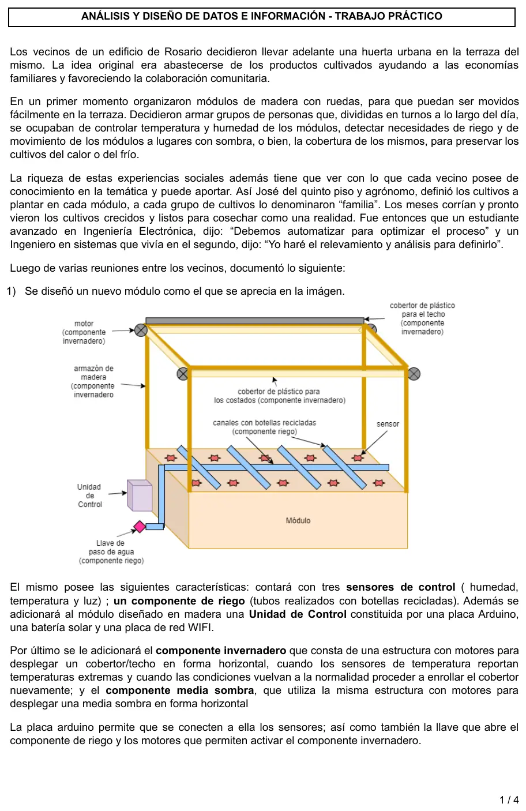
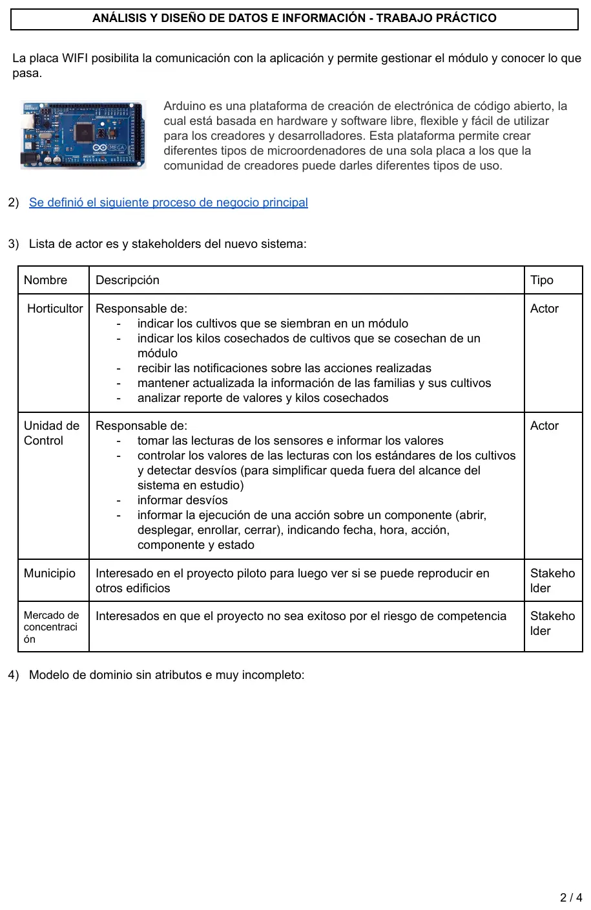
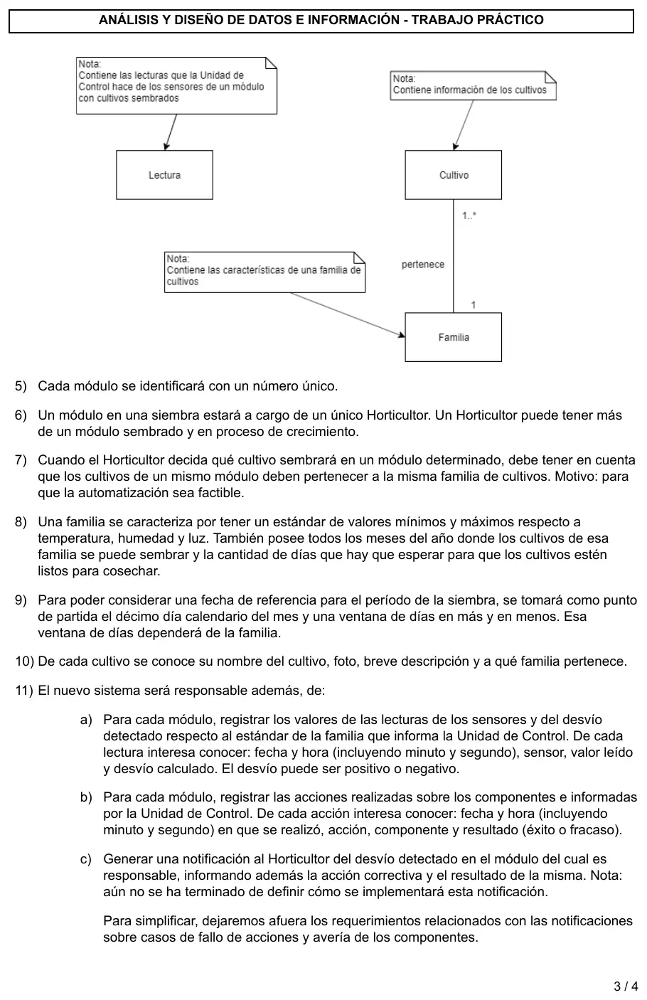
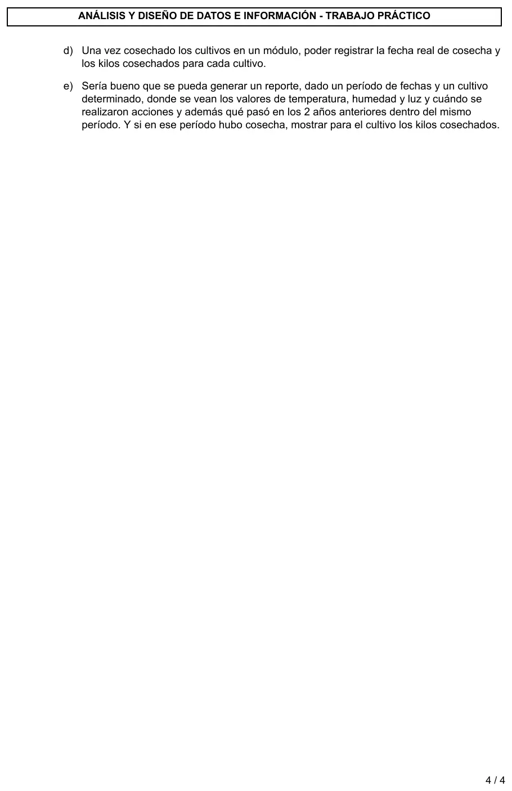

TP integrador: enunciado de la huerta urbana
TP integrador
Enunciado








Propuesta de respuesta
Respuesta no verificada. La propuso Luta Studios con inteligencia artificial y ningún docente la revisó. Puede tener errores.
Esta propuesta arma los entregables 1 a 6 para el producto mínimo del enunciado, con un bosquejo dibujado y el resto descripto. La defensa, el mapa de empatía y el Journey quedan para tu grupo, porque salen de lo que releven ustedes. Los flujos salen del proceso de negocio, que tiene su propia propuesta.
1. Bosquejos
| Código | Bosquejo | Plataforma | Por qué |
|---|---|---|---|
| B01 | Inicio del Horticultor, con sus módulos, la última lectura y los avisos | Móvil | Le llegan las notificaciones y lo mira en la terraza |
| B02 | Registrar siembra, con módulo, familia y cultivos | Móvil | Se carga al lado del módulo |
| B03 | Indicar la fecha de siembra | Móvil | Igual que B02 |
| B04 | Registrar cosecha, con la fecha y los kilos de cada cultivo | Móvil | Pesa y carga en la terraza |
| B05 | Familias, con sus estándares, meses de siembra, días hasta cosecha y ventana | Web | Carga larga y poco frecuente |
| B06 | Cultivos, con nombre, foto, descripción y familia | Web | Igual que B05 |
| B07 | Reporte por período y cultivo | Web | Tabla y gráfico de tres años, necesita pantalla grande |
Este es B04. Las notas al costado explican el comportamiento, como en los bosquejos de la clase 4.
2. Diccionario de datos
Con la notación de la clase 1 y el código del bosquejo antes de cada diccionario, como piden los entregables.
B02 - Registrar siembra
e: siembra = nroMódulo + códigoFamilia + 1{códigoCultivo}n
s: resultadoSiembra = mensajeSiembra
mensajeSiembra = ["Se registró la siembra del módulo" | "Elegí al menos un cultivo"]
B03 - Indicar la fecha de siembra
e: confirmaciónSiembra = nroMódulo + fechaSiembra
s: resultadoFechaSiembra = mensajeFechaSiembra
mensajeFechaSiembra = ["Se registró la fecha de siembra" | "La fecha está fuera de la ventana de siembra de la familia" | "La fecha no está en un mes de siembra de la familia"]
B04 - Registrar cosecha
e: cosecha = nroMódulo + fechaRealCosecha + 1{códigoCultivo + kilosCosechados}n
s: resultadoCosecha = mensajeCosecha
mensajeCosecha = ["Se registró la cosecha del módulo" | "La fecha de cosecha no puede ser anterior a la de siembra" | "Los kilos tienen que ser mayores que 0"]
B05 - Familias
e: familia = nombreFamilia + 3{estándar(e)}3 + 1{mesSiembra}12 + díasHastaCosecha + ventanaDías
estándar(e) = magnitud + valorMínimo + valorMáximo
magnitud = char(11); [temperatura | humedad | luz]
s: resultadoFamilia = mensajeFamilia
mensajeFamilia = ["Se registró la familia" | "La ventana tiene que ser de 1 a 9 días" | "El mínimo tiene que ser menor que el máximo"]
B06 - Cultivos
e: cultivo = nombreCultivo + foto + descripciónBreve + códigoFamilia
B07 - Reporte
e: pedidoReporte = fechaDesde + fechaHasta + códigoCultivo
s: reporteCultivo = nombreCultivo + 3{períodoAnalizado(e)}3
períodoAnalizado(e) = año + 0{lectura(e)}n + 0{acción(e)}n + (kilosCosechados)
lectura(e) = fechaHora + sensor + valorLeído
acción(e) = fechaHora + acción + componente + resultado- Los estándares son tres, uno por magnitud, con su mínimo y su máximo (regla 8). Los meses de siembra van de 1 a 12.
- El reporte de la regla 11e muestra el período pedido y el mismo período de los 2 años anteriores, por eso
3{períodoAnalizado(e)}3. Los kilos van entre paréntesis porque se muestran solo si hubo cosecha.
3. Tabla de depuración
| Bosquejo | ID | Alias | Tipo | Longitud | Discreto | Continuo | Formato | Criterio | Comentarios |
|---|---|---|---|---|---|---|---|---|---|
| B02 | nroMódulo | módulo | num | 3 | Módulo existente y sin siembra en curso | Se elige de una lista con los módulos libres | |||
| B02 | códigoCultivo | cultivo | num | 4 | Al menos uno, todos de la familia elegida (regla 7) | La lista muestra solo los cultivos de la familia | |||
| B03 | fechaSiembra | char | 10 | 00/00/0000 | En un mes de siembra de la familia, entre el día 10 menos la ventana y el día 10 más la ventana (regla 9), y no posterior a hoy | Calendario sin fechas futuras | |||
| B04 | fechaRealCosecha | char | 10 | 00/00/0000 | No anterior a la fecha de siembra y no posterior a hoy | Calendario sin fechas futuras | |||
| B04 | kilosCosechados | kilos | num | 6 | 0,01 a 999,99 | 990,00 | Mayor que 0 | Uno por cultivo del módulo | |
| B05 | magnitud | char | 11 | temperatura, humedad, luz | Las tres, una vez cada una | ||||
| B05 | valorMínimo, valorMáximo | num | 6 | #990,0 | Mínimo menor que máximo | La temperatura puede ser negativa | |||
| B05 | mesSiembra | num | 2 | 1 a 12 | De 1 a 12 meses distintos | Casillas, una por mes | |||
| B05 | ventanaDías | ventana | num | 2 | 1 a 9 | 90 | Entre 1 y 9 | Con 9, la siembra va del 1 al 19 del mes. Con más, se saldría del mes | |
| B07 | fechaDesde, fechaHasta | char | 10 | 00/00/0000 | Desde no posterior a hasta |
4. Clases de equivalencia
El contexto de los ejemplos es una familia con ventana de 5 días y meses de siembra marzo y abril, un módulo sembrado el 12/11/2025 y hoy, 20/03/2026.
| Bosquejo | Atributo | Válida | Inválidas |
|---|---|---|---|
| B03 | fechaSiembra | V1.1. Mes de siembra, del 05 al 15 del mes, hasta hoy. Ejemplo 12/03/2026 | I1.1. Antes del día 05. Ejemplo 04/03/2026. I1.2. Después del día 15. Ejemplo 16/03/2026. I1.3. Mes que no es de siembra. Ejemplo 10/01/2026. I1.4. Posterior a hoy. Ejemplo 12/04/2026 |
| B04 | kilosCosechados | V2.1. De 0,01 a 999,99. Ejemplo 2,50 | I2.1. Menor que 0,01. Ejemplo 0. I2.2. Mayor que 999,99. Ejemplo 1000 |
| B04 | fechaRealCosecha | V3.1. Del 12/11/2025 a hoy. Ejemplo 15/02/2026 | I3.1. Anterior a la siembra. Ejemplo 01/11/2025. I3.2. Posterior a hoy. Ejemplo 25/03/2026 |
| B02 | códigoCultivo | V4.1. Uno o más de la familia. Ejemplo Lechuga y Rúcula | I4.1. Ninguno. I4.2. De otra familia. Ejemplo Tomate |
| B05 | ventanaDías | V5.1. De 1 a 9. Ejemplo 5 | I5.1. Menor que 1. Ejemplo 0. I5.2. Mayor que 9. Ejemplo 10 |
La fecha de siembra junta dos condiciones, un rango alrededor del día 10 y un «debe ser» (mes de siembra y no futura). Por eso tiene cuatro inválidas. Los cultivos son una cantidad de valores sin tope, así que no hay inválida «por encima».
5. Casos de prueba
| Nro. Caso | Bosquejo | Objetivo | Atributo y valor | Resultado esperado |
|---|---|---|---|---|
| CP01 | B03 | V1.1 | nroMódulo 3, fechaSiembra 12/03/2026 | Se registra. «Se registró la fecha de siembra» |
| CP02 | B03 | I1.1 | nroMódulo 3, fechaSiembra 04/03/2026 | No se registra. «La fecha está fuera de la ventana de siembra de la familia», con la ventana del 05/03/2026 al 15/03/2026 a la vista |
| CP03 | B03 | I1.2 | nroMódulo 3, fechaSiembra 16/03/2026 | No se registra. El mismo mensaje y la misma ventana que CP02 |
| CP04 | B03 | I1.3 | nroMódulo 3, fechaSiembra 10/01/2026 | No se registra. «La fecha no está en un mes de siembra de la familia», con los meses de siembra a la vista |
| CP05 | B03 | I1.4 | nroMódulo 3, fechaSiembra 12/04/2026 | El calendario no deja elegir una fecha futura. Se resuelve en la interface |
| CP06 | B04 | V3.1 y V2.1 | nroMódulo 2, fechaRealCosecha 15/02/2026, Lechuga 2,50, Rúcula 1,20 | Se registra. «Se registró la cosecha del módulo» |
| CP07 | B04 | I3.1 | nroMódulo 2, fechaRealCosecha 01/11/2025, Lechuga 2,50, Rúcula 1,20 | No se registra. «La fecha de cosecha no puede ser anterior a la de siembra», con la fecha de siembra a la vista |
| CP08 | B04 | I3.2 | nroMódulo 2, fechaRealCosecha 25/03/2026, Lechuga 2,50, Rúcula 1,20 | El calendario no deja elegir una fecha futura. Se resuelve en la interface |
| CP09 | B04 | I2.1 | nroMódulo 2, fechaRealCosecha 15/02/2026, Lechuga 0, Rúcula 1,20 | No se registra. «Los kilos tienen que ser mayores que 0», marcando la fila de Lechuga |
| CP10 | B04 | I2.2 | nroMódulo 2, fechaRealCosecha 15/02/2026, Lechuga 1000, Rúcula 1,20 | La máscara 990,00 no deja escribir más de tres enteros. Se resuelve en la interface |
| CP11 | B02 | V4.1 | nroMódulo 5, familia Hojas verdes, Lechuga y Rúcula | Se registra. «Se registró la siembra del módulo» |
| CP12 | B02 | I4.1 | nroMódulo 5, familia Hojas verdes, sin cultivos | No se registra. «Elegí al menos un cultivo» |
| CP13 | B02 | I4.2 | nroMódulo 5, familia Hojas verdes, Tomate | La lista muestra solo los cultivos de la familia. Se resuelve en la interface |
| CP14 | B05 | V5.1 | ventanaDías 5, con el resto de los datos válidos | Se registra. «Se registró la familia» |
| CP15 | B05 | I5.1 | ventanaDías 0, con el resto válido | No se registra. «La ventana tiene que ser de 1 a 9 días» |
| CP16 | B05 | I5.2 | ventanaDías 10, con el resto válido | No se registra. El mismo mensaje que CP15 |
Cada caso tiene a lo sumo una inválida. Cuatro clases se resuelven en la interface, y para esas alcanza con indicar la situación, como piden los entregables.
6. Ayudas
| Ayuda | Dónde va el acceso | Por qué |
|---|---|---|
| Manual tradicional | Al pie de todos los bosquejos | Va siempre, aunque nunca como única ayuda |
| Ayuda contextual | B03 y B05 | La ventana de siembra y los estándares son reglas del dominio que no se ven en la pantalla |
| Tooltip | Kilos en B04, ventana y estándares en B05 | Dicen la unidad y el rango sin salir de la pantalla |
| PPFF | Al pie de todos los bosquejos | Por ejemplo, por qué un cultivo no aparece en la lista de B02 |
| Tutorial | B02 y B04, al primer ingreso | Siembra y cosecha se hacen pocas veces por temporada, y el Horticultor las usa de forma intermitente |
| Lo nuevo | B01 | Para avisar un cambio, como cuando se defina la notificación de la regla 11c |
| Chatbot o mesa de ayuda | B01 | Para las dudas que no resuelven el manual ni las PPFF. Junto con Lo nuevo o el tutorial, es lo que pide el nivel Excelente de R04 |
Respuesta no verificada. Puede tener errores.
Se armó con Integrador (entregables y rúbricas R01 a R04), Final (la práctica paso a paso, máscaras, partición equivalente y casos de prueba) y el enunciado del TP, reglas 5 a 11.
Quedó en duda: Las plataformas, los mensajes, los tipos y las longitudes, el tope de 999,99 kilos y la familia Hojas verdes con sus cultivos son de esta propuesta. El enunciado no los da. El material no trae la matriz de tipos de usuario y ayudas, así que la tabla de ayudas sale de la rúbrica R04 y de la clase 6. Usé char y num de la clase 1, y la plantilla usa string y numb. Faltan la defensa, el mapa de empatía y el Journey, que dependen del grupo.